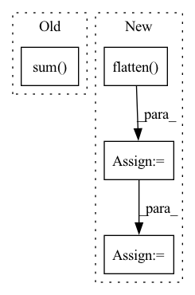

Pattern ID :20948

Before Change
def cal_explanation_feature(self, saliency_maps: torch.Tensor) -> int:
exp_features = []
for smap in saliency_maps:
sparse_feat = torch.sum(torch.abs(smap))
n_channels = smap.shape[0]
kernel = torch.tensor([[0., 1., 0.],
[1., -4., 1.],
After Change
def cal_explanation_feature(self, saliency_maps: torch.Tensor) -> float:
sparse_feats = saliency_maps.flatten(start_dim=1).norm(p=1) // (N)
smooth_feats = self.conv2d(saliency_maps).flatten(start_dim=1).norm(p=1) // (N)
persist_feats = 0.0 // todo (N)
exp_feats = self.lambd_sp * sparse_feats + self.lambd_sm * smooth_feats + self.lambd_pe * persist_feats
return exp_feats.median()
In pattern: SUPERPATTERN
Frequency: 4
Non-data size: 4
Instances
Fragment ID: 67396164
Project Name: ain-soph/trojanzoo
Commit Name: afe7bbd2d2e9f901ee8cf56c3b9320b9272a81af
Time: 2020-07-22
Author: ain-soph@live.com
File Name: trojanzoo/defense/backdoor/neuron_inspect.py
M Class Name: Neuron_Inspect
N Class Name: Neuron_Inspect
M Method Name: cal_explanation_feature(2)
N Method Name: cal_explanation_feature(2)
M Parent Class: Defense_Backdoor
N Parent Class: Defense_Backdoor
M File Name: trojanzoo/defense/backdoor/neuron_inspect.py
N File Name: trojanzoo/defense/backdoor/neuron_inspect.py
M Start Line: 68
M End Line: 84
N Start Line: 68
N End Line: 73
'>
Before Change
).T
random_state.shuffle(mask)
while (
np.sum(np.unique(mask, axis=1, return_counts=True)[1] > 1) > 0
or np.sum(np.sum(mask, axis=0) == 0) > 0
):
random_state.shuffle(mask)
After Change
* latent_dims,
axis=0,
).T
mask = mask.flatten()
random_state.shuffle(mask)
mask = mask.reshape(weights.shape)
weights = weights * mask
if view_positive:
weights[weights < 0] = 0
'>
Fragment ID: 67396196
Project Name: jameschapman19/cca_zoo
Commit Name: 7907165373bb48678f5c1d9b612b10d8070fd333
Time: 2021-11-28
Author: james.chapman.19@ucl.ac.uk
File Name: cca_zoo/data/simulated.py
M Class Name: AnonimousClass
N Class Name: AnonimousClass
M Method Name: generate_covariance_data(10)
N Method Name: generate_covariance_data(10)
M Parent Class:
N Parent Class:
M File Name: cca_zoo/data/simulated.py
N File Name: cca_zoo/data/simulated.py
M Start Line: 42
M End Line: 95
N Start Line: 76
N End Line: 91
'>
Before Change
offset = i + self.offset
end = start + (tsz - offset) * bsz * copies
pos_num = (end - start) // copies
predictions[start:end] = (x[..., :-offset, i] * targets[..., offset:]).sum(dim=2).flatten()
labels[start:start + pos_num] = 1.
if weights is not None:
weights[start:start + pos_num] = 1.
After Change
).flatten()
else:
pos_num = (end - start) // copies
predictions[start:end] = torch.einsum(
"bct,nbct->nbt", x[..., :-offset, i], targets[..., offset:]
).flatten()
labels[start : start + pos_num] = 1.0
if weights is not None:
weights[start : start + pos_num] = 1.0
start = end
assert end == predictions.numel(), "{} != {}".format(end, predictions.numel())
if self.infonce:
predictions = predictions.view(-1, copies)
else:
if weights is not None:
labels = (labels, weights)
'>
Fragment ID: 67396198
Project Name: kssteven418/i-bert
Commit Name: 3335de5f441ee1b3824e16dcd98db620e40beaba
Time: 2020-02-29
Author: alexei.b@gmail.com
File Name: fairseq/models/wav2vec.py
M Class Name: Wav2VecPredictionsModel
N Class Name: Wav2VecPredictionsModel
M Method Name: forward(3)
N Method Name: forward(3)
M Parent Class: nn.Module
N Parent Class: nn.Module
M File Name: fairseq/models/wav2vec.py
N File Name: fairseq/models/wav2vec.py
M Start Line: 411
M End Line: 439
N Start Line: 638
N End Line: 691